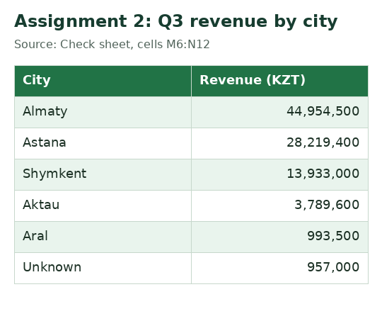
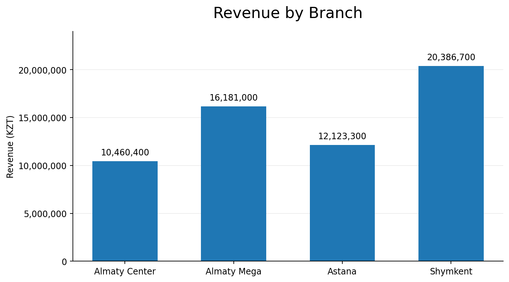

Projects
Assignment 2 — City Comparison

The question was how much revenue came from each city. I used Excel to calculate the totals and compare my results with the AI's answers. Almaty had the highest revenue at 44,954,500 KZT, and all the city totals matched the AI's answers.
Table image exported from my Assignment 2 results (Check sheet).
Assignment 1 — Branch Revenue

The question was how much revenue each branch made. I used Excel to compare the revenue of four branches. Shymkent had the highest revenue at 20,386,700 KZT, while Almaty Center had the lowest.
Chart based on my Assignment 1 results (Report sheet).